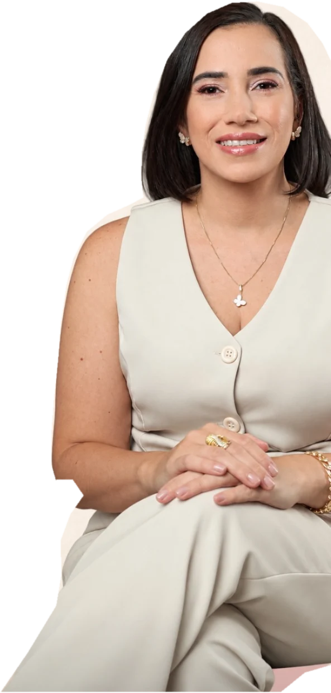

ESCUTA ✦ CIÊNCIA ✦ MOVIMENTO ✦ FUNCIONALIDADE ✦ ESCUTA ✦ CIÊNCIA ✦ MOVIMENTO ✦ FUNCIONALIDADE ✦ ESCUTA ✦ CIÊNCIA ✦ MOVIMENTO ✦ FUNCIONALIDADE ✦ ESCUTA ✦ CIÊNCIA ✦ MOVIMENTO ✦ FUNCIONALIDADE ✦
CUIDADO INDIVIDUAL ✦ BEM-ESTAR ✦ QUALIDADE DE VIDA ✦ CUIDADO INDIVIDUAL ✦ BEM-ESTAR ✦ QUALIDADE DE VIDA ✦ CUIDADO INDIVIDUAL ✦ BEM-ESTAR ✦ QUALIDADE DE VIDA ✦ CUIDADO INDIVIDUAL ✦ BEM-ESTAR ✦ QUALIDADE DE VIDA ✦
ÁREAS DE ATUAÇÃO
Como posso cuidar de você?
PRINCIPAL FOCO DE ATENDIMENTO
Fisioterapia para DTM
O cuidado com as disfunções temporomandibulares considera a dor, a mobilidade e a função da mandíbula, da região cervical e da cintura escapular.
A avaliação individual orienta a escolha de técnicas manuais, exercícios terapêuticos e recursos como laserterapia e dry needling, quando indicados.
Atendimento voltado à mobilidade, equilíbrio, força e independência no dia a dia.
02
Manejo das dores musculares
Recursos terapêuticos e liberação miofascial, conforme a avaliação e as necessidades de movimento.
03
Fisioterapia pós-operatória
Acompanhamento após cirurgias plásticas e de ATM, respeitando a fase de recuperação.
04
Fisioterapia dermatofuncional
Cuidados com a pele, incluindo drenagem linfática, limpeza de pele e microagulhamento facial, quando indicado.

PRAZER, SOU CALIANE VIDAL
Escuta, ciência e acolhimento.
Sou fisioterapeuta e meu propósito é promover saúde, movimento e funcionalidade. Meu foco de atendimento é o cuidado das dores e das disfunções temporomandibulares.
Cada avaliação considera os sintomas, a função e as necessidades de cada pessoa, para orientar um plano de atendimento individualizado.